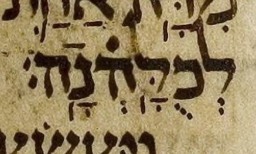
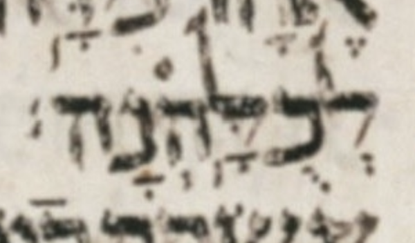

Alternately, you can click on an individual Hebrew word to toggle only that word's spacing.
The location of a word's stress is not always obvious. In the research we present here, we locate stress using Phonetic MAM, which marks the stress of every word.
In the research we present here, we define “prose” and “poetic” as follows:
At 1K 7:37, in MAM, there is a meteg after silluq in לְכֻלָּֽהְנָֽה׃. We ignore it for the purposes of this research.

At 1K 7:37, the Leningrad Codex lacks the meteg after the silluq.

MBS_O counts words that have one or more meteg marks before the stress and none after it. The “O” means “only.” MAS counts words that have one or more meteg marks after the stress, whether the word has zero or more meteg marks before the stress.
The % MAS column is the MAS count divided by the sum of the MBS_O and MAS counts.
143 MBS_O words have more than one meteg mark. Every one of those MBS_O words has exactly two meteg marks.
No MAS word has more than one meteg mark after the stress: every MAS word has exactly one meteg mark after the stress.
There are ten MAS words that also have one meteg mark before the stress. They are listed below. (There are no MAS words with more than one meteg before the stress.)
| (sub)types | ||
|---|---|---|
| Lev. 25:53 | לֹֽא־יִרְדֶּ֥נּֽוּ | 1A |
| 1 Sam. 22:17 | כִּֽי־בֹרֵ֣חַֽ | 2B |
| 1 Sam. 25:15 | וְלֹֽא־פָקַ֣דְנֽוּ | 1A |
| 1 Sam. 29:6 | לֹֽא־מָצָ֤אתִֽי | 1A |
| 1 Kgs. 8:16 | לֹֽא־בָחַ֣רְתִּֽי | 1A |
| Isa. 65:18 | כִּֽי־אִם־שִׂ֤ישֽׂוּ | 1A |
| Jer. 42:2 | כִּֽי־נִשְׁאַ֤רְנֽוּ | 1A |
| Mic. 1:12 | כִּֽי־חָ֥לָֽה | 1A |
| Ps. 94:9 | אִֽם־יֹ֥צֵֽר | 3 |
| Dan. 6:25 | דִּֽי־שְׁלִ֤טֽוּ | 1A |
The Masoretic tradition records two cantillations for three passages. Those three passages are the two Decalogues and Genesis 35:22. The analyses presented in this document use only MAM's cant-alef cantillation. The table below shows that this choice has no effect on the MAS count and changes the other two counts only by 1. (We have not analyzed what effect the choice has on the “fit for MAS” analysis, but I think it is safe to assume that the choice has little or no effect.)
| count | cant-alef | cant-bet |
|---|---|---|
| Words | 130 | 129 |
| MBS | 12 | 13 |
| MAS | 0 | 0 |
The difference in number of words between cant-alef and cant-bet is due to the different pointing of two atoms in Deut. 5:14: cant-alef has two simple words where cant-bet has one compound word.
| cant-alef | כ֣י ע֤בד |
| cant-bet | כי־ע֥בד |
The difference in the MBS count between cant-alef and cant-bet is due to the different pointing of three atoms in Deut. 5:6: cant-alef has no meteg among those three atoms; cant-bet has one meteg before the stress among those three atoms.
| cant-alef | לֹא־יִהְיֶ֥ה לְךָ֛ | no meteg |
| cant-bet | לֹ֣א יִהְיֶֽה־לְךָ֩ | MBS |
In MAM, 6 meteg marks share a letter with oleh. The table below labels each such meteg as MBS or MAS.
| Ps. 2:7 | אֶֽ֫ל־חֹ֥ק | MBS |
| Ps. 78:38 | וְֽלֹא־יַֽ֫שְׁחִ֥ית | MBS |
| Ps. 80:15 | שֽׁ֫וּב־נָ֥א | MBS |
| Job 14:14 | הֲיִֽ֫חְיֶ֥ה | MBS |
| Ps. 37:7 | וְהִתְח֢וֹלֵֽ֫ל | MAS |
| Prov. 8:34 | שֹׁמֵ֢עַֽ֫ | MAS |
We count each such meteg as if the oleh were not there, because oleh is not an accent indicating stress, even when it is the last accent in the word, as it is in the MAS rows above. In other words, a MAS word with a meteg might at first look like some weird "meteg on the stress" (neither before nor after), but it is not!